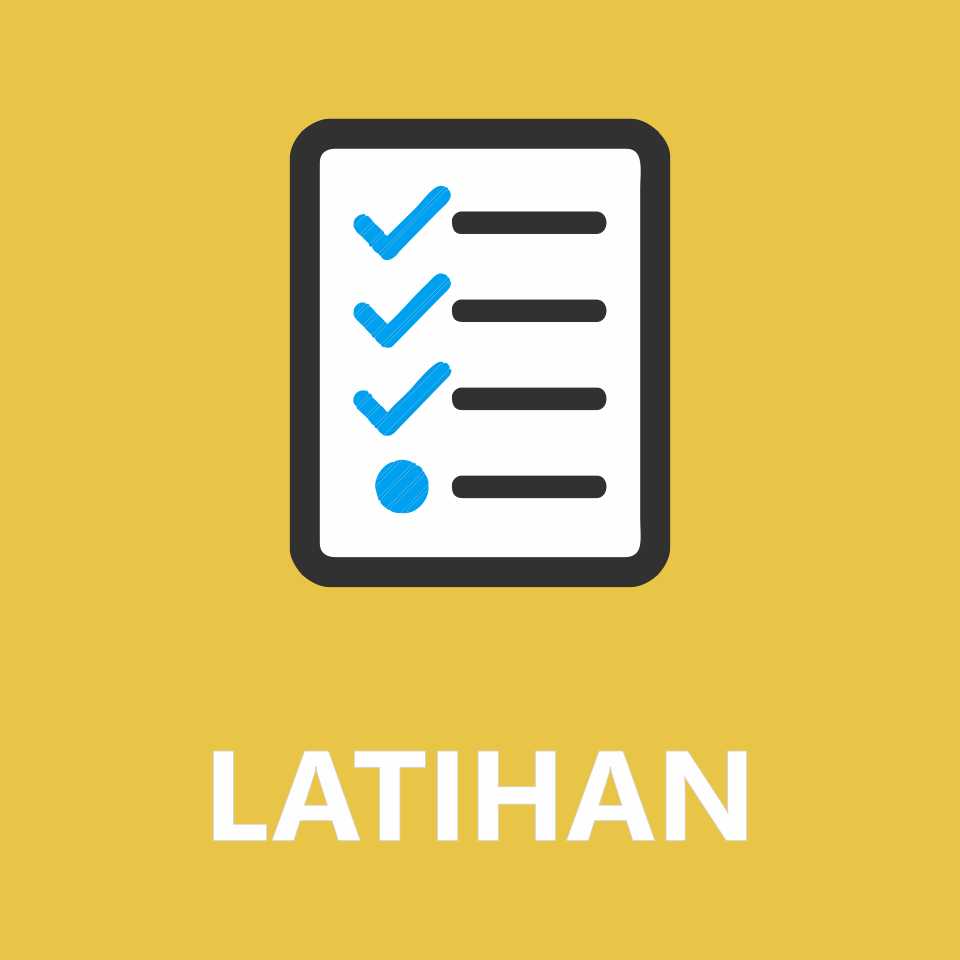
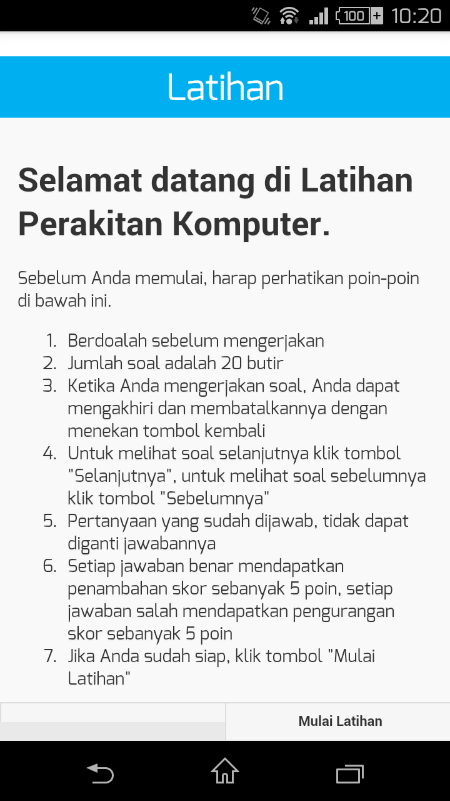
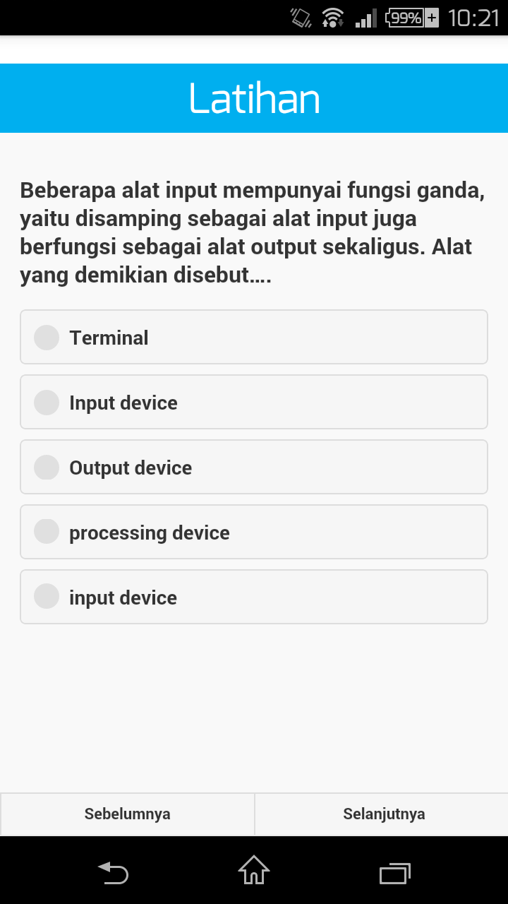
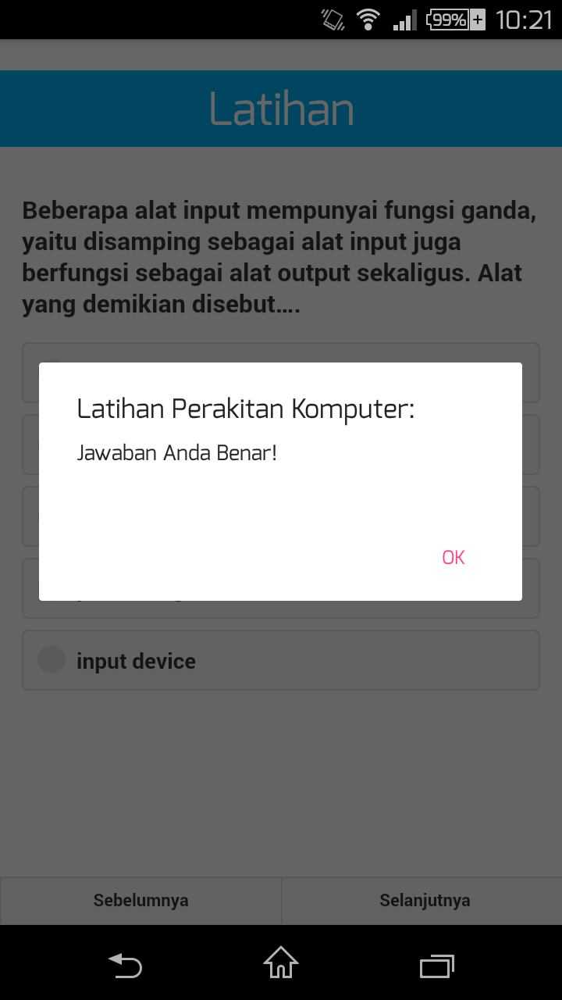
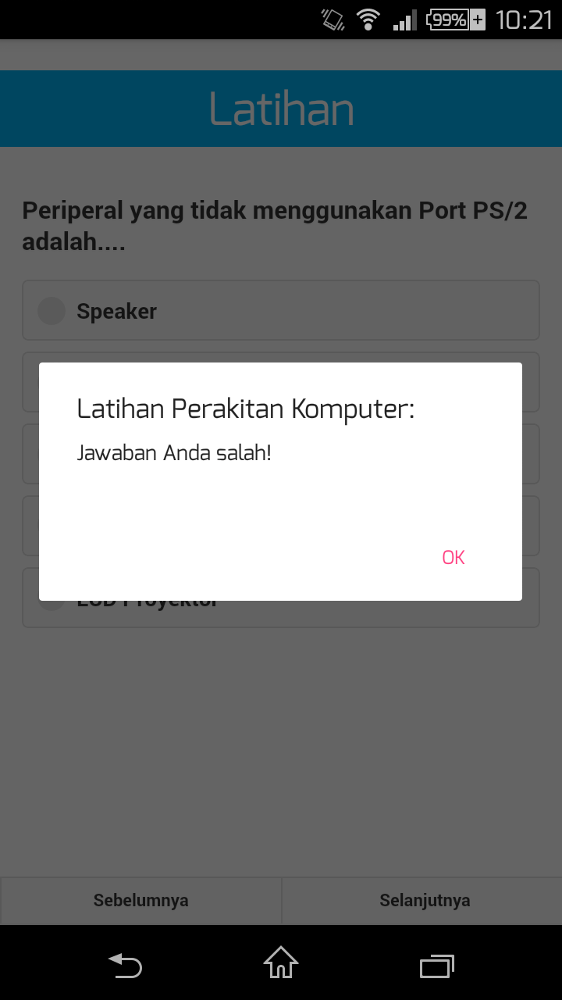
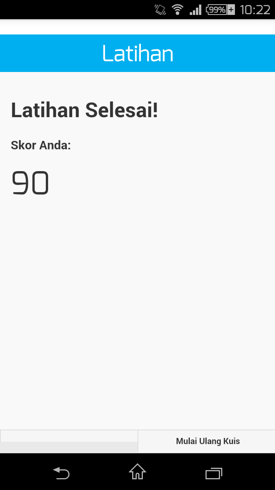
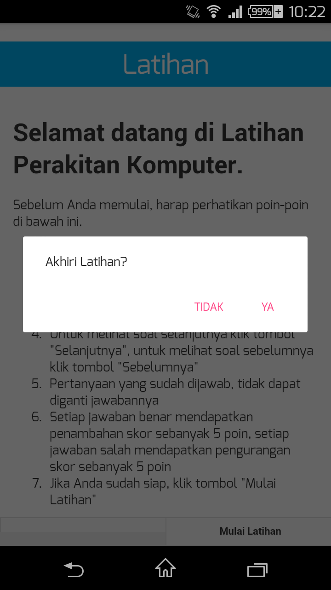

Untuk menggunakan fitur Latihan, sentuh pada menu "Latihan"

Aplikasi akan membawa Anda menuju halaman awal Latihan Perakitan Komputer.

Pada halaman ini, Anda akan diberikan petunjuk dalam mengerjakan latihan. Baca dengan baik sebelum mengerjakan soal dalam latihan. Jika sudah yakin, klik pada tombol Mulai Latihan untuk memulai latihan. Secara otomatis, aplikasi mulai memberikan soal-soal yang harus Anda jawab.

Jika Anda menjawab pertanyaan dengan benar, maka akan muncul notifikasi bahwa jawaban Anda benar.

Jika jawaban Anda salah, maka akan muncul notifikasi bahwa jawaban Anda salah.

Di akhir latihan, nilai jawaban benar dan salah Anda akan dihitung dan ditampilkan.

Jika Anda belum puas denga nilai Anda, Anda dapat menyentuh tombol Mulai Ulang Kuis untuk mengulangi latihan.
Untuk keluar dari Latihan, sentuh tombol Back Button, dan akan muncul konfirmasi untuk mengakhiri latihan.
